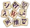

已有1,254,914篇條目 • Wikipedia:首页
藝術
建筑 • 图书 • 电影摄影 • 舞蹈 • 設計 • 時裝 • 电影 • 美食學 • 文學 • 魔術 • 音乐 • 绘画 • 摄影 • 诗歌 • 雕塑 • 劇場 (藝術)
地理
非洲 • 南极洲 • 北极地区 • 亚洲 • 加勒比地区 • 中美洲 • 欧洲 • 拉丁美洲 • 地中海 • 中东 • 北美洲 • 大洋洲 • 南美洲 • 地图学
歷史
古埃及 • 古希腊 • 日本历史 • 古代近東 • 古罗马 • 考古学 • 大英帝国 • 拜占庭帝国 • 文明 • 殖民主义 • 十字軍東征 • 纹章学 • 科学史 • 中国历史 • 印度独立运动 • 中世纪 • 莫卧儿帝国 • 奥斯曼帝国 • 俄罗斯帝国 • 萨珊王朝 • 塞尔柱帝国 • 苏联 • 战争
科學
农业 • 应用数学 • 建筑 • 计算机科学 • 工程学 • 司法科学 • 光学 • 牙醫學 • 医学 • 护理学 • 药学 • 社會工作 • 兽医学 • 天文學 • 生物学 • 化學 • 地球科学 • 物理学 • 社会科学
社會科學
傳記 • 群体 • 文化 • 死亡 • 教育 • 言論自由 • 人权 • 互联网 • 法律 • 哲学 • 政治 • 宗教 • 人类的性 • 社會運動
體育
亚洲运动会 • 英聯邦運動會 • 奥林匹克运动会 • 残奥会 • 美式足球 • 足球 • 田径 • 羽毛球 • 棒球 • 篮球 • 板球 • 体操 • 武術 • 職業摔角 • 聯盟式橄欖球 • 橄欖球 • 游泳 • 网球
技術
农业 • 天文學 • 航空 • 生物技术 • 计算机科学 • 电子学 • 能量 • 工程学 • 基础设施 • 信息技术 • 纳米技术 • 科学哲学 • 无线电波 • 可再生能源 • 机器人学 • 软件 • 航天 • 可持续发展 • 电信 • 鐵路列車 • 运输
Kiwix
Kiwix是用于离线浏览维基百科的免费应用软件。维基百科的内容以压缩形式存储在zim格式的文件中，Kiwix可以读取此类文件以达到帮助用户在没有网络链接的情况下浏览维基百科的目的。目前，Kiwix软件存在Mac、Windows、Linux等多种版本。
该软件为没有网络访问权限的计算机而设计。
查看更多 kiwix.org
 维基百科
维基百科
维基百科 是一個自由的网络百科全书，在一般情況下容許用戶編輯其任何條目。它是網絡上最大型及最受大眾歡迎的参考工具书，並已列入十大最受歡迎的網站。當前維基百科是由非營利組織維基媒體基金會負責營運。維基百科一字取自於本網站核心技術「Wiki」以及具有百科全書之意的「encyclopedia」共同創造出來的新混成詞「Wikipedia」。
下载姊妹项目
|  |
| 维基词典 多语言字词典 (1.3 Gb) |